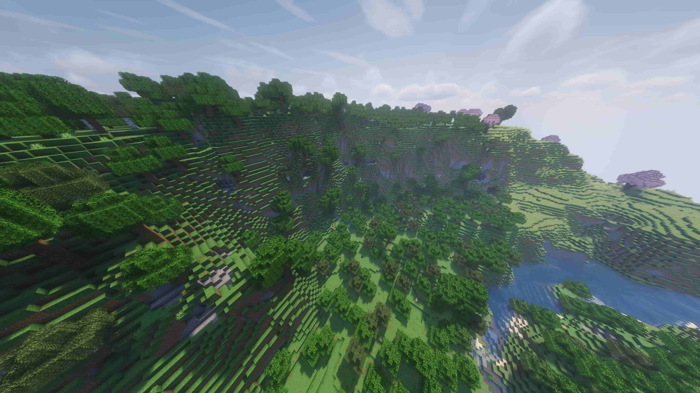

Welcome to QualityOfJavaMC
Your go-to resource for discovering and commissioning safe high-quality Java Minecraft mods.
Why was QualityOfJavaMC made?
QualityOfJavaMC was created to provide a safe and reliable platform for users to discover and commission high-quality quality-of-life Java Minecraft mods. We understand the challenges players face in finding trustworthy mods, and our goal is to streamline that process.
About the Founder
QualityOfJavaMC was founded by Ethan Long, a passionate Minecraft player and modding enthusiast. With years of experience in the Minecraft community, Ethan recognized the need for a dedicated platform to connect players with high-quality mods. His vision is to create a safe and reliable space for mod discovery and commissioning.